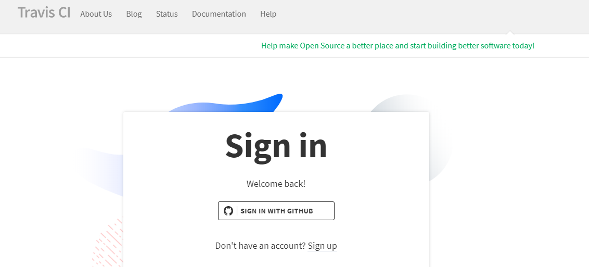
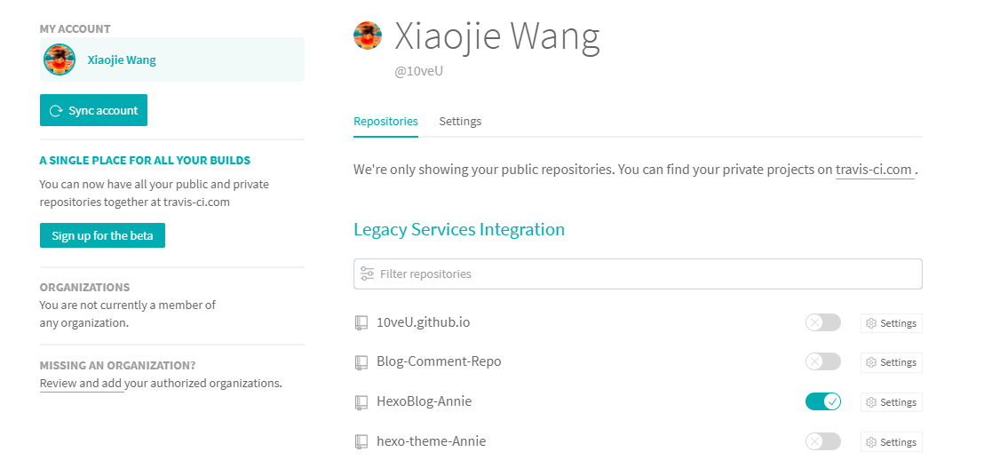
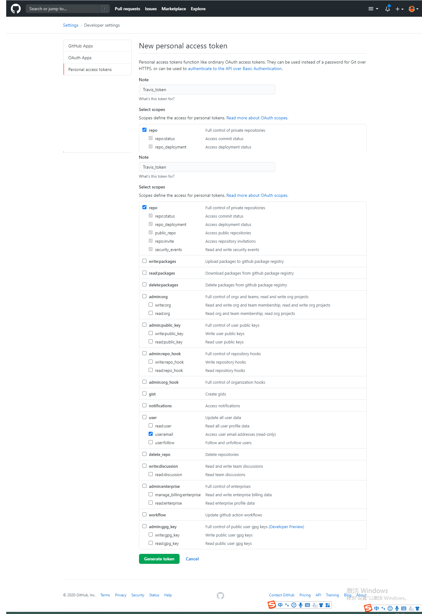
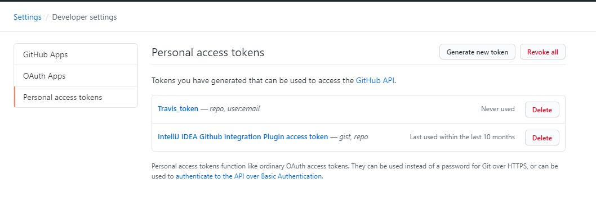

Hexo+GitHub免费搭建个人博客
作者：大大蜡笔小小新
1. Hexo框架的介绍
Hexo的官方介绍：A fast,simple&powerful blog framework。
Hexo框架具有以下特点：
- 快速搭建
- 支持
Markdown语法 - 支持一键部署
- 丰富的主题和插件
2. 环境准备
2.1申请一个GitHub账户
2.2搭建Hexo需要的环境
如何安装Hexo及安装Hexo需要的环境，可以参考Hexo官方文档
2.3环境验证
Node.js和Git安装是否成功?
1 | Microsoft Windows [版本 10.0.17134.590] |
Node.js和npm的关系
Node.js是javascript的一种运行环境，是对Google V8引擎进行的封装。是一个服务器端的javascript的解释器。
包含关系:Node.js中含有npm，比如说你安装好Node.js，你打开cmd输入npm -v会发现npm的版本号，说明npm已经安装好。
引用大神的总结:
其实npm是Node.js的包管理器（package manager）。我们在Node.js上开发时，会用到很多别人已经写好的javascript代码，
如果每当我们需要别人的代码时，都根据名字搜索一下，下载源码，解压，再使用，会非常麻烦。于是就出现了包管理器npm。
大家把自己写好的源码上传到npm官网上，如果要用某个或某些个，直接通过npm安装就可以了，不用管那个源码在哪里。
并且如果我们要使用模块A，而模块A又依赖模块B，模块B又依赖模块C和D，此时npm会根据依赖关系， 把所有依赖的包都下载下来并且管理起来。试想如果这些工作全靠我们自己去完成会多么麻烦！其实就是类似于Java中的Maven。
3. 下载及安装Hexo
3.1下载及安装Hexo
在cmd终端窗口执行下载安装命令
1 | npm install hexo-cli -g |
安装完成如下图：

执行命令判断Hexo安装是否成功
1 | hexo -v |
安装成功如下：

3.2初始化博客
以下操作尽可能都在
Git终端操作
首先在自己本地磁盘创建一个安装目录，这里以Hexo为例；

切换到此文件夹目录下执行初始化命令
1 | hexo init |

如果你未自己手动创建文件夹，也可通过以下的命令去初始化
1
2
3
4
5
6// 建立一个博客文件夹，并初始化博客，<folder>为文件夹的名称，可以随便起名字
hexo init <folder>
// 进入博客文件夹，<folder>为文件夹的名称
cd <folder>
// node.js的命令，根据博客既定的dependencies配置安装所有的依赖包
npm install
初始化完成
1 | hexo g // 生成网页。 |

通过提示的信息，访问本地服务器

4. 配置博客
当然，目前的博客界面不是很美观，如果想做的比较有点逼格，当然还是得个性化定制下，我们可以去Hexo官网下载自己喜欢的主题。
选择你喜欢的主题，复制它的链接，clone到本地博客的themes目录下


配置博客我们首先就得了解博客文件结构
1 | |node_modules:node.js的相关组件 |
按照主题的README.md文档进行配置。
例如我使用的博客主题是Annie
5. 博客个性化设置
我们按照自己选择的Hexo主题进行配置后，如果想根据自己的喜好做相应的修改当然也是可以的。比如可以给博客添加图片、视频、音乐播放器等等。
5.1博客中添加图片1
博客中的图片添加有以下几种方式：
本地引用
- 绝对路径
直接在主题下的img（存储图片文件夹，不同的主题存储图片的名称可能不同）文件夹下(themes/所选主题文件夹/source/img),/img/图片名称.jpg这张图片，就可以使用以下方式访问：1

eg:
- 相对路径
图片除了可以放在统一的img文件夹中，还可以放在文章自己的目录中。文章的目录可以通过配置博客根目录下的_config.yml来生成。
1 | post_asset_folder: true |
将_config.yml文件中的配置项post_asset_folder设为true后，执行命令$ hexo new post_name，在source/_posts中会生成文章post_name.md和同名文件夹post_name。将图片资源放在post_name文件夹中，文章就可以使用相对路径引用图片资源了。_posts/post_name/图片名称.jpg这张图片可以用以下方式访问：
1 |  |
eg:
CDN引用
除了在本地存储图片，还可以将图片上传到一些免费的 CDN服务中。因国内访问GitHub速度较慢，所以将突破放到国内图床上，然后引用外链接是常用的方法。
常用图床总结：https://sspai.com/post/40499
常用的图床有：七牛云、腾讯云、微博图床等。
GitHub
使用github存储博客图片
- 创建一个空的仓库
- 将图片
push到仓库中 - 点击图片进去，有个
download，右键复制链接 - 将链接插入文章
引用格式：
1 |  |
- 在
blog（hexo）目录下Git Bash Here，运行hexo n "博客文章名"来生成md博客时，会在_post目录下看到一个与博客同名的文件夹。 - 将想要上传的图片先扔到文件夹下，然后在博客中使用
markdown的格式引入图片：1

因为博客名和文件夹名字相同，所以不需要绝对路径，只要xxxx是文件夹的名字就可以了。
5.2博客中添加视频2
以
bilibili为例，B站无广告
- 去B站获取视频外链

- 在文章中插入视频外链
我们知道在md中可以直接插入html代码。这里我们就插入视频外链。代码如下：
1 | <iframe src="//player.bilibili.com/player.html?aid=68662896&cid=118997493&page=1" scrolling="no" border="0" frameborder="no" framespacing="0" allowfullscreen="true"> </iframe> |
我们可以看到效果令人很不满意。
- 修改代码，美化播放器样式。
代码如下：1
2<div style="position: relative; width: 100%; height: 0;padding-bottom: 75%;" >
<iframe src="//player.bilibili.com/player.html?aid=68662896&cid=118997493&page=1" scrolling="no" border="0" frameborder="no" framespacing="0" allowfullscreen="true" style="position: absolute; width: 100%; height: 100%; left: 0; top: 0;"> </iframe></div>
5.3博客中添加网易云音乐歌单
- （以 Chrome 为例，其他浏览器类似）打开歌单页面，在“生成外链播放器”上右击，点击检查（审查元素
ctrl+shift+i）；
- 接着找到生成外链播放器这段文字直接双击复制前面的
/outchain/0/170792779/
- 然后修改歌单链接示例：http://music.163.com/#/outchain/0/170792779/（可以修改自己喜欢的播放器尺寸，播放模式后再复制代码）

由于版权限制，好多歌曲可能在播放器中无法播放，毕竟没有收费，将就用吧！😂
5.4博客中实现在线联系功能
在线联系功能可以使访客及时，快捷的与博主交流，也能帮助博主及时的解决访客提出的博文中的问题。Hexo实现在线联系功能主要有以下两种方式:
DaoVoice实现在线联系
注册登录
DaoVoice
注册登录DaoVoiceDaoVoice接入DaoVoice接入Daovoice绑定微信（可选）DaoVoice虽然可以很好的与访客交流，但是还是不能像微信聊天一样方便，所以我们绑定微信，瞬间秒回访客消息，不再等待！
HEXO的博客添加gitter在线交流
6. 持续集成Hexo博客
6.1使用Jenkins持续集成Hexo博客3
6.2用TravisCI持续集成Hexo博客
Travis CI个人免费站点
Travis CI企业收费站点6.2.1核心概念
什么是持续集成（CI）？4
CI(Continuous Integration)翻译为持续集成。
持续集成是经常合并小的代码更改的实践，而不是在开发周期结束时合并大的更改。目的是通过以较小的增量开发和测试来构建更健康的软件。这就是Travis CI出现的地方。
作为一个持续集成平台，Travis CI通过自动构建和测试代码更改来支持您的开发过程，并提供有关更改成功的即时反馈。Travis CI还可以通过管理部署和通知来自动化开发过程的其他部分。6.2.2准备条件
要开始使用Travis CI，请确保您具有：
一个GitHub的帐户。
托管在GitHub上的项目的所有者权限。
- 博客源码仓库
- 博客部署仓库
6.2.3 关联仓库
使用GitHub登录到Travis CI个人免费站点

关联到持续集成的仓库

配置 Access Token
如下图，Environment Variables 区域就是用来添加权限信息的。我们需要填写一个Token的名称和值，该名称可以在配置文件中以 ${变量名} 来引用，该Token我们需要从Github中获取。
从Github获取Access Token
在Github的setting页面，左侧面板选择Developer settings然后Personal access tokens, 右上角点击Generate new token。生成token时候需要确定访问scope，这里我们选择我们的repo即可。

重要：生成的token只有第一次可见，一定要保存下来备用。

在Travis CI中配置
将上面获取到的token添加到 Environment Variables 部分，值为该 token ,而名称即为上面设置的 Travis_Token (请更改为个人所设置名称)。不勾选后面的 Display value in build log . 否则会在日志文件中暴露你的 token 信息，而日志文件是公开可见的。
至此我们已经配置好了要构建的仓库和访问的token，接下来就是如何构建的问题了。
配置.travis.yml（如果没有，新建)
我个人的.travis.yml 可供参考
1 | # 指定构建环境是Node.js，当前版本是稳定版 |
注意：需要将配置文件中的 GH_TOKEN 换成我们自己设定的名称，这里我的配置应该是 Travis_token 即 - git push –force –quiet “https://${Travis_token}@${GH_REF}” master:master # GH_TOKEN是在Travis中配置token的名称。 还要更改 GH_REF 中我们的博客仓库的地址。